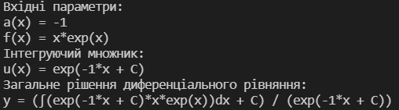

Лабораторна робота 8.
Символьні обчислення мовами функціонального програмування. Операції з многочленами.
Варіант 20
Автор
| ПІБ: | Семечненко Тарас Олександрович |
| Курс: | 4 |
| Група: | ІПЗ-42 |
| Рік навчання: | 2021-2022 |
Зміст
Мета
Умова задачі
Структура програми
Обгрунтування вибору середовища та мови програмування
Код програми
Скрін-шоти
Аналіз достовірності результатів
Висновки
Мета
Опанувати теоретичні основи символьних обчислень мовами функціонального програмування. Розробити програми символьного диференціювання та реалізації арифметики поліномів
Умова задачі
Задача
Структура програми
Схема задачі

Обгрунтування вибору середовища та мови програмування
Середовище програмування: VS Code
Середовище обране через:1) Це моє основне середовище в якому програмую, і його можна використовувати майже для будь-якої мови програмування.
2) Має всі необхідні функції для програмування і працює набагато швидше в порівнянні з іншими IDE.
Мова функціонального програмування: Haskell
Мова обрана через:1) Це одна з самих популярних та нових функціональних мов програмування.
2) Дуже багата документація.
3) Мова має дуже приємний та простий синтаксис.
Код програми:
Посилання на код завдання
Скрін-шоти:
Результат виконання програми:
Аналіз достовірності результатів
Я підібрав параметри, які були в прикладі до аналогічного завдання і порівняв результати виконання моєї програми з розрахунками з веб-ресурсу.
Результати моєї програми співпадають з реальними розрахунками, однак, щоб отримати вираз, який повністю співпадає з цим прикладом, необхідно вирішити інтеграли та спростити вираз.
Висновки
В л.р. було виконано завдання за допомогою мови Haskell.
В даній лабораторній роботі завдання описане не правильно, оскільки в диференціальному рівнянні не можна знайти корені, його можна тільки вирішити.
Для виконання цієї роботи я взяв загальну формулу диференціального рівняння першого порядку та підставив всі необхідні значення, завдяки конкатенації рядків типу string.
В результаті ми отримуємо вираз, який є рішенням диф рівняння.